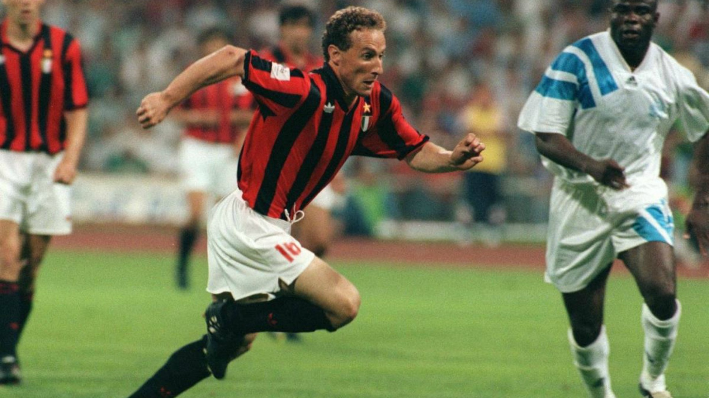
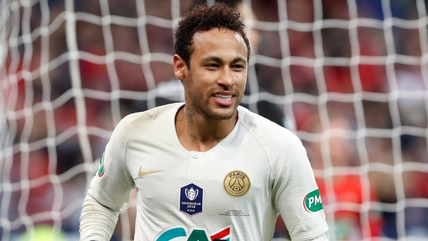

Newsfeed
UEFA
The 2018–19 UEFA Champions League is the 64th season of Europe's premier club football tournament organised by UEFA, and the 27th season since it was renamed from the European Champion Clubs' Cup to the UEFA Champions League. The final will be played at the Wanda Metropolitano in Madrid, Spain.

Spain on 1 June 2019,[1] between the winner of the first semi-final, Tottenham Hotspur or Ajax, and English side Liverpool, the losing finalists of the previous season. For the first time since 2013, the final will not feature a Spanish team.
FIFA Women's World Cup
The 2019 FIFA Women's World Cup will be the eighth edition of the FIFA Women's World Cup, the quadrennial international football championship contested by the women's national teams of the member associations of the Fédération Internationale de Football Association (FIFA) between 7 June and 7 July 2019.
In March 2015, France won the right to host the event;[2] the first time the country will host the tournament, and the third time a European nation will. Matches are planned for nine cities across France. The United States enters the competition as defending champions. It will also be the first Women's World Cup to use the video assistant referee (VAR) system.
2019 Top Sport Events
Super Bowl – Football 3-Feb-2019 to 3-Feb-2019 ATLANTA, GEORGIA | USA The Super Bowl is the annual championship game of the National Football League. The game is the culmination of a regular season that begins in the late summer of the previous calendar year.Football is on the top list.
AFC Asian Cup – Football (Soccer) 5-Jan-2019 to 1-Feb-2019 SEVERAL | UAE From the Far East to the Middle East, the top Asian footballing nations will meet in the UAE to compete for the AFC Asian Cup UAE 2019. The largest tournament field in history, with 24 participating nations, happens across four cities across the UAE (Abu Dhabi, Al Ain, Dubai and Sharjah), from 5 January to 1 February 2019.
Jean-Pierre Papin
Jean-Pierre Papin has described football as a "universal language". Footballers across the world and at almost any level may regularly attract large crowds of spectators, and players are the focal points of widespread social phenomena such as association football culture.
Footballers generally begin as amateurs and the best players progress to become professional players. Normally they start at a youth team (any local team) and from there, based on skill and talent, scouts offer contracts. Once signed, some learn to play better football and a few advance to the senior or professional teams.
Lionel Messi
Lionel Andrés Messi Cuccittini(Spanish pronunciation: [ljoˈnel anˈdɾez ˈmesi] (About this soundlisten);[A] born 24 June 1987) is an Argentine professional footballer who plays as a forward and captains both FC Barcelona and the Argentina national team.Often considered the best player in the world and regarded by many as one of the greatest players of all time, Messi has won a record-tying five Ballon d'Or awards,four of which consecutively, and a record five European Golden Shoes.

He has spent his entire professional career with Barcelona, where he has won a club-record 34 trophies, including 10 La Liga titles, four UEFA Champions League trophies and six Copas del Rey.
Cristiano Ronaldo
orn and raised on the Portuguese island of Madeira, Ronaldo was diagnosed with a racing heart at age 15. He underwent an operation to treat his condition, and began his senior club career playing for Sporting CP, before signing with Manchester United at age 18 in 2003. After winning his first trophy in England, the FA Cup, during his first season there.

He helped United win three successive Premier League titles, a UEFA Champions League title, and a FIFA Club World Cup. By age 22, he had received Ballon d'Or and FIFA World Player of the Year nominations and at age 23, he won his first Ballon d'Or and FIFA World Player of the Year awards.
Neymar
Neymar da Silva Santos Júnior (Brazilian Portuguese: [nejˈmaʁ dɐ ˈsiwvɐ ˈsɐ̃tus ˈʒũɲoʁ]; born 5 February 1992), commonly known as Neymar Jr. or simply Neymar, is a Brazilian professional footballer who plays as a forward for French club Paris Saint-Germain and the Brazil national team. Considered one of the best players in the world,[6] he is known for his dribbling, finishing, skill, pace, and ability to play with both feet.
Neymar began playing football at an early age and he was soon spotted by Santos FC who offered him a contract in 2003, where he was inducted into their youth academy, which has, in the past, produced Brazilian internationals like Coutinho, Clodoaldo, Diego, Elano and Alex. He also joined the likes of Pepe, Pelé and Robinho in starting out his career at the club, nicknamed Peixe. While in the youth academy, Neymar met Paulo Henrique Ganso, becoming good friends in the process. Aged 14, Neymar travelled to Spain to join the Real Madrid youth team, at the time when Real had stars like Ronaldo, Zinedine Zidane, David Beckham, Roberto Carlos and Robinho.